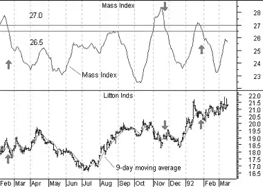

The Mass Index was designed to identify trend reversals by measuring the narrowing and widening of the range between the high and low prices. As this range widens, the Mass Index increases; as the range narrows the Mass Index decreases.
The Mass Index was developed by Donald Dorsey.
According to Mr. Dorsey, the most significant pattern to watch for is a "reversal bulge." A reversal bulge occurs when a 25-period Mass Index rises above 27.0 and subsequently falls below 26.5. A reversal in price is then likely. The overall price trend (i.e., trending or trading range) is unimportant.
A 9-period exponential moving average of prices is often used to determine whether the reversal bulge indicates a buy or sell signal. When the reversal bulge occurs, you should buy if the moving average is trending down (in anticipation of the reversal) and sell if it is trending up.
The following chart shows Litton and its Mass Index.
 A 9-day exponential moving average is plotted on top of Litton's prices. I drew arrows when a reversal bulge occurred (i.e., the Mass Index rose above 27 and then fell below 26.5). If the 9-day moving average was falling, I drew a "buy" arrow. If the 9-day moving average was rising, I drew a "sell" arrow.You can see that the signals generated by the Mass Index during this time period occurred a few days before the trend reversed.